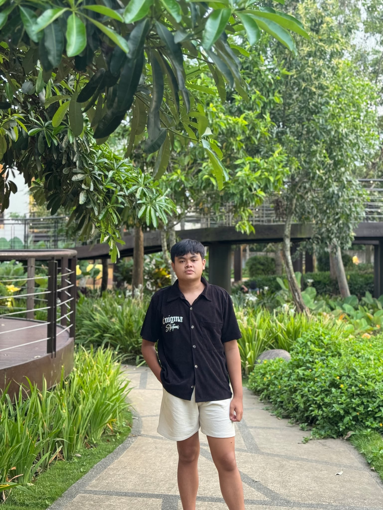

Windows desktop app
EmberWatch
A hardware monitor that keeps my PC from overheating mid-game, with live temperatures, overheat alerts and a small overlay that sits on top of whatever I'm playing.
Read moreHello, I'm Franz Jandrei Valderama
Graduating BSIT student at City College of Tagaytay, getting ready to start my career as a developer and data analyst.

I'm a 4th-year BS Information Technology student at City College of Tagaytay, and I'm about to graduate. I like keeping up with how fast tech moves, and I learn best by building things that solve real problems.
That's how I ended up with a desktop app that watches my PC's temperatures, a study tool my fellow students can use, and a website for the gym I plan to open someday. After graduation, I want to grow as a developer and get better at turning data into decisions.
Windows desktop app
A hardware monitor that keeps my PC from overheating mid-game, with live temperatures, overheat alerts and a small overlay that sits on top of whatever I'm playing.
Read more